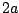
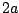
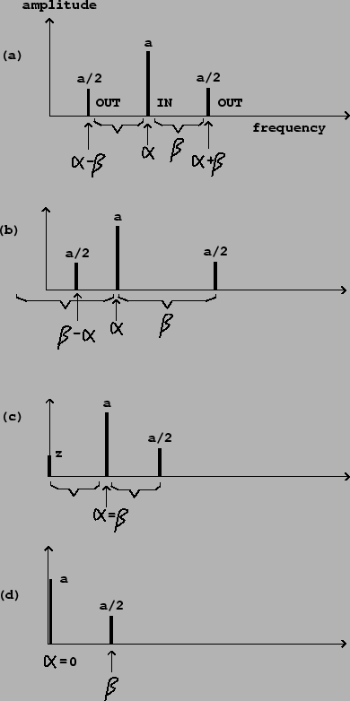
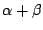
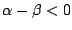
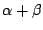
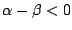
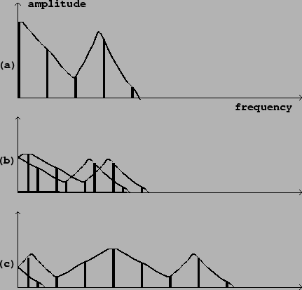

We have been routinely adding audio signals together, and multiplying them
by slowly-varying signals (used, for example, as amplitude envelopes) since
Chapter 1. For a full understanding of the algebra of audio
signals we must also consider the situation where two audio signals,
neither of which may be assumed to change slowly, are multiplied. The key to understanding
what happens is the Cosine Product Formula:
We can use this formula to see what happens when we multiply two sinusoids
(Page  ):
):
This gives us a technique for shifting the component frequencies of a sound, called ring modulation, which is shown in its simplest form in Figure 5.2. An oscillator provides a carrier signal, which is simply multiplied by the input. In this context the input is called the modulating signal. The term ``ring modulation" is often used more generally to mean multiplying any two signals together, but here we'll just consider using a sinusoidal carrier signal. (The technique of ring modulation dates from the analog era [Str95]; digital multipliers now replace both the VCA (Section 1.5) and the ring modulator.)
Figure 5.3 shows a variety of results that may be obtained by
multiplying a (modulating) sinusoid of angular frequency  and
peak amplitude
, by a (carrier) sinusoid of angular frequency
and
peak amplitude
, by a (carrier) sinusoid of angular frequency  and
peak amplitude 1:
and
peak amplitude 1:
|  |
Parts (a) and (b) of the figure show ``general" cases where  and
and  are
nonzero and different from each other. The component frequencies of the output
are
 and
. In part (b), since
,
we get a negative frequency component. Since cosine is an even function, we
have
are
nonzero and different from each other. The component frequencies of the output
are
 and
. In part (b), since
,
we get a negative frequency component. Since cosine is an even function, we
have
In the special case where
, the second (difference) sideband
has zero frequency. In this case phase will be significant so we rewrite
the product with explicit phases, replacing  by
by  , to get:
, to get:
Finally, part (d) shows a carrier signal whose frequency is zero. Its value is
the constant  (not ; zero frequency is a special case). Here we
get only one sideband, of amplitude
(not ; zero frequency is a special case). Here we
get only one sideband, of amplitude  as usual.
as usual.
We can use the distributive rule for multiplication to find out what
happens when we multiply signals together which consist of more than one
partial each. For example, in the situation above we can replace the
signal of frequency  with a sum of several sinusoids, such as:
with a sum of several sinusoids, such as:
Figure 5.4 shows the result of multiplying a complex periodic signal (with several components tuned in the ratio 0:1:2:) by a sinusoid. Both the spectral envelope and the component frequencies of the result are changed according to relatively simple rules.
|  |
The resulting spectrum is essentially the original spectrum combined with its reflection about the vertical axis. This combined spectrum is then shifted to the right by the carrier frequency. Finally, if any components of the shifted spectrum are still left of the vertical axis, they are reflected about it to make positive frequencies again.
In part (b) of the figure, the carrier frequency (the frequency of the sinusoid) is below the fundamental frequency of the complex signal. In this case the shifting is by a relatively small distance, so that re-folding the spectrum at the end almost places the two halves on top of each other. The result is a spectral envelope roughly the same as the original (although half as high) and a spectrum twice as dense.
A special case, not shown, is to use a carrier frequency half the fundamental. In this case, pairs of partials will fall on top of each other, and will have the ratios 1/2 : 3/2 : 5/2 : to give an odd-partial-only signal an octave below the original. This is a very simple and effective octave divider for a harmonic signal, assuming you know or can find its fundamental frequency. If you want even partials as well as odd ones (for the octave-down signal), simply mix the original signal with the modulated one.
Part (c) of the figure shows the effect of using a modulating frequency much higher than the fundamental frequency of the complex signal. Here the unfolding effect is much more clearly visible (only one partial, the leftmost one, had to be reflected to make its frequency positive). The spectral envelope is now widely displaced from the original; this displacement is often a more strongly audible effect than the relocation of partials.
As another special case, the carrier frequency may be a multiple of the fundamental of the complex periodic signal; then the partials all land back on other partials of the same fundamental, and the only effect is the shift in spectral envelope.